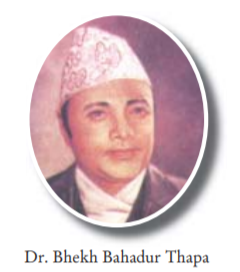

Biography:
Bhekh Bahadur Thapa was the fourth governor of Nepal.
He was the governor from August 14, l966 to July 26, l967
during the ruling period of King Mahendra. Now notes
are issued as a Rs. Signature of Bhekh Bahadur Thapa
can be seen on the notes of Rs 5, Rs 10 and Rs 100.